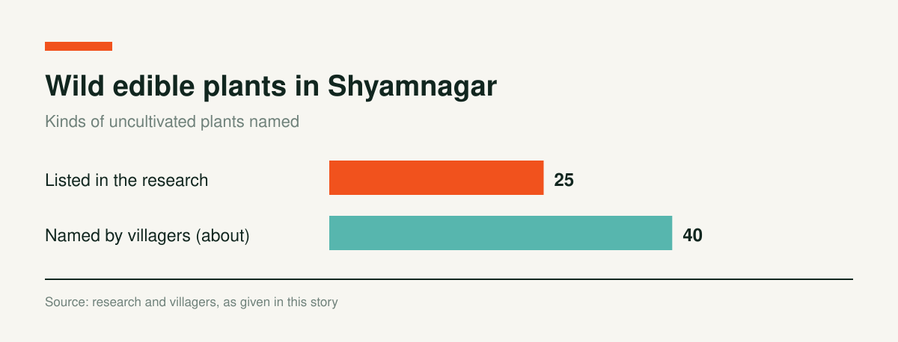

Rural Nutrition at Risk: The Habitats of Wild Edible Plants Are Under Threat

Bangladesh is a land rich in biodiversity, and it dresses differently in each season. The people of this country, surrounded by natural beauty, have always met their needs from nature. Rural people live closer to nature than urban people and depend on it more, and rural women in particular have an intimate relationship with it. There was a time when villagers relied more on wild greens than on market vegetables. They gathered the greens that grew around them to meet their family's needs. We call these uncultivated plants. They met food needs and were also used as medicine. They played a large role in meeting nutritional needs and also raised resistance to disease.
Today, advances in technology and science, environmental and climate change, and the influence of the market have changed much of this. Villagers say the change has not yet fully reached the countryside, though urbanization has made it visible in towns. Many village people who cannot buy vegetables from the market gather these plants from around their homes and from fallow land and eat them regularly, which helps meet family nutrition. If these plants decline, family food, nutrition and income will suffer.
What Are Uncultivated Plants?
Generally, crops grown by tilling land and sowing seed through the year are called cultivated crops, such as potato, tomato, red amaranth, cauliflower, Malabar spinach and radish. Greens that people do not sow or tend, which come from nature, are called uncultivated greens. Examples are bathua, sanchi, thorny amaranth, water spinach and thankuni. The same species do not grow in every region. Some people call them wild plants. Diverse uncultivated species are found in Sylhet, the Chattogram Hill Tracts, Barishal, Khulna, Satkhira, Tangail, Madhupur and other areas. Villagers say there are about 40 kinds, including bathua, helencha, ghum shak, brahmi and thorny amaranth.
Plants Identified in the Research
The research lists 25 uncultivated plants, among them helencha, amrul shak, telakucha, thorny amaranth, brahmi, thankuni, black taro (kalo kochu), bathua, bou note, gima shak, sanchi, kule khara, ghum shak, nunia shak, wild fig, wild sweet potato, gadhamoni, gandha madule, kantha shak, khud khichuri, water spinach, basak, kalkasunde, red akanda and water lily. Leaves and stems of many are cooked as vegetables.

- Villagers and herbal healers report that these plants purify the blood, relieve dysentery, ease colds, cough and asthma, treat anemia, improve appetite and digestion, and raise resistance to disease.
- Brahmi is said to improve memory, and juice of its leaves with honey helps clear phlegm.
- Ghum shak leaves are used for sleeplessness, and wild fig is used by herbal healers for cuts, boils, bloody dysentery and excessive urination.
- Basak is used for colds, cough, asthma and to brighten the skin, and is said to increase mothers' milk.
- Red akanda is used for constipation, skin and blood disorders and piles, and water lily is said to cool the body and help with dysentery and bloating.
According to villagers and the research organization BARCIK, many more uncultivated plants grow locally, including gandha bhejali shak, dheki shak, dudh shak, hegra shak, tit begun, pipul shak, black wild taro and ghora senchi shak. Uncultivated medicinal plants include tulsi, aloe vera, pathorkuchi, kalmegh, lajjabati, shatamul, blue butterfly pea, nayantara, akanda, bohera and dozens of others.
Uncultivated greens are one of the main sources of food for rural people, and many village herbal healers use the plants as medicine. But they are disappearing because of environmental change, lack of conservation, modern farming methods, chemical pesticides, population growth and other causes. Elders regret that these greens are vanishing, but they say villagers do not know enough about how to keep them. A handful of rural women and men are trying to conserve them, but their efforts are barely visible.
Rural Women and Men Who Conserve Uncultivated Plants
Sharma Rani Mondal (48), of Mathurapur village in Munshiganj Union, Shyamnagar Upazila, coastal Satkhira, has planted plots of kantha shak, thankuni, sanchi, brahmi, bil shak, kule khara and bathua on her homestead. She also gathers and conserves them from around the house. "The benefits are endless," she says, and she believes these plants are vanishing in the age of chemicals. She suggests building seed banks and growing them in home yards.
Govinda Mondal (52), a village herbal healer from Shreefalkati village in Shyamnagar, says he has seen these plants used as food and medicine since his fathers' time. "They cost little and supply family nutrition. For minor ailments, apart from serious disease, we don't have to go to a doctor." He says no one in his family has seen a doctor in the last six months to a year. He uses uncultivated plants to treat bloating, dysentery, semen disorders, urinary problems, diabetes, toothache and ear problems. To conserve them, he has planted helencha, bathua, thankuni, gandha bhadule, telakucha, khud khichuri, basak, kalmegh, bohera, akanda, red hibiscus, white hibiscus, kalkasunde and others at home. He says plants are being lost because the new generation does not recognize them or know their benefits, and because of chemical fertilizer and pesticides.
Alpana Rani Mistri (43), a housewife from Dhumghat Terkatichak village in Shyamnagar, trained with the NGO BARCIK and learned the properties of these plants. She now grows 20 to 25 kinds on her homestead, including ghum shak, adabaruna, helencha, black taro, nayantara and matiphora shak. She says extreme salinity, lack of government initiative and climate change are making this diversity vanish. With less use of chemical pesticides, plus training and support on the properties of these plants, they can be saved.
Subala Mistri (76), an elderly woman from Dhumghat village, married at 14. Since then she has tried to cook thankuni leaves, helencha, telakucha, adabaruna or water spinach almost every day. "You can find these around the house. You don't have to cultivate them," she says. "Gentlefolk these days depend on the market. They don't recognize these greens and don't want to eat them. I can't finish telling their benefits." She learned about these plants from her mother and grandmother, and says she stays healthy eating them.
Experts on Conservation and Risk
Pavel Partha, a researcher and columnist, says food everywhere in the world comes from two sources: production and gathering. Plants gathered for food and medicine without being cultivated are called wild plants, uncultivated plants or foraged food. In Bangladesh the main consumers are rural communities. Rural families cook foraged food almost daily. Many eat it cooked or raw, and use it as medicine. In Bangladesh these plants come from natural forests such as the Hill Tracts, Sylhet, Tangail and Madhupur, and also from village woods and bushes, roadsides, wetlands and water bodies. Rural women mostly gather, process and serve them. Men do so less.
These plants vary by season. Different greens are available in summer, the monsoon, spring, winter and autumn. Partha says his research found more species in the monsoon and spring. Not every part of a plant is eaten in every season. On the coast, for example, the tender shoots of khagra and hegra are eaten, but not the leaves. Uncultivated plants are also tied to festivals and customs. At Chaitra Sankranti, at the end of the year, some places eat 14 kinds of greens and others 22, mostly uncultivated. Not every green is popular everywhere. Dudh shak (ghum shak) grows on the coast but not in Sylhet. Some are common in every region, such as water spinach, bathua, thankuni and telakucha. Some grow on high ground and some in water. Many are also used to treat livestock.
Partha says uncultivated plants contribute to food, health and the environment. They feed birds, mongooses, frogs and other animals. Bees, butterflies and other insects pollinate their flowers. They build the ecosystem of the village. Rural people do not uproot them. Rural women and their families contribute to family, food and national economies by meeting nutrition and food needs.
On the threats, he says the new generation does not know or recognize which part of a plant to eat in which season. Well-off families in villages and towns are less inclined to eat them. No clause in Bangladesh's environmental or agricultural policy mentions conserving uncultivated plants. Disasters, waterlogging, climate change, lack of rain and drought also put them at risk. For conservation he recommends short, medium and long term plans. He also recommends protecting the plants' habitats, creating plots in every neighborhood, holding neighborhood fairs, holding cooking competitions for foraged greens, publicizing their benefits in the media, and taking government and nongovernment initiatives. Plots can be created in educational institutions, and conservation should be added to the policies of the agriculture and environment ministries.
Ghazi Abdus Salam, Assistant Agriculture Extension Officer at the Shyamnagar Upazila agriculture office, says many uncultivated plants are more or less familiar to us and have many benefits, such as thankuni, adabaruna and brahmi. He gives the reasons for their loss as low market demand, low production in saline areas, nurseries lacking diversity of these species, lack of seed, farmers' disinterest, and lack of government support or guidance. For conservation, he says to make seeds easily available, train farmers, tell people at every level about the plants' properties and promote them with billboards, leaflets and the media. He says research is needed, and guidelines on conserving uncultivated plants should be added to the agriculture and environment ministries.
Nazmul Huda, Shyamnagar Upazila Agriculture Officer, says these plants are mostly used in Ayurvedic work. He says herbicides used in crop fields are killing them. As the population has grown, there is less homestead land than before, and so there are fewer of them, because they used to be grown on homesteads. Industrial growth has also reduced space. He singles out a weed called parthenium, which is harmful to humans and all plants. It is killing or wiping out many medicinal and useful plants, and usually grows at the edges of ponds or water bodies in freshwater areas. He also blames today's intensive farming, and the absence of any policy on uncultivated plants in the agriculture and environment ministries. He says they need to be researched in laboratories and conserved at the same time. He says the government should act, adding conservation of uncultivated plants to policy, just as policy covers conserving crops, and that patenting them or registering them as geographical indication (GI) products could protect them. Without government guidelines there is no scope to give incentives to farmers who grow them, he says. With guidelines and incentives, many would take up the work. He says herbal healers use these plants widely and need support, and he stresses research and policy above all.
Lt. Col. (retd.) Dr. Md. Mozahidul Haque, director of Friendship, a nongovernment hospital in Shyamnagar, says these plants grow alongside various other trees. They are highly nutritious and are used as food and medicine. Plants that grow without any cultivation are heading toward extinction. Medicinal plants contribute to preventing many diseases, he says, and many drug companies use uncultivated plants. Their importance is immense. Given that, a social revolution is essential for conservation, and there is no substitute for government patronage through the relevant ministries.
Dr. Nazmul Munir, Medical Officer at the Shyamnagar Upazila Health Complex, says these plants can be found around houses and in yards, and some people grow them. Before allopathic medicine existed, Ayurvedic medicine was used more, and these plants work as Ayurvedic medicine. Our forefathers lived and recovered on it. The plants certainly work, he says. As far as he knows, some allopathic medicines contain Ayurvedic components, which have been greatly improved. Uncultivated plants provide ingredients that are modernized and used in drugs. Demand for Ayurvedic medicine still exists and the government has given it importance. As a result, each Upazila Health Complex has an Ayurvedic physician. For conservation, he stresses commercial cultivation, research and giving the plants proper importance. He speaks of various forms of government help, and asks rural and urban people to grow these plants on fallow land.
Dr. Sheikh Abdur Razzak, Medical Officer (Unani) at the Shyamnagar Upazila Health Complex, says these plants do not need to be cultivated. They grow in nature, usually in damp places with little sun, and on fallow land. Some people grow thankuni, tulsi, brahmi and adabaruna on their homesteads, and he describes the benefits of each. He says uncultivated plants were used for treatment long before allopathic medicine was discovered. Many people value Unani medicine above allopathy, and some diseases are cured by Unani medicine, which means medicine made from uncultivated plants. Later, as science advanced, these were modernized into allopathic medicine. On their importance, he says the government has created a post for one Unani and one Ayurvedic physician in every health complex, and allocates funds to build a herbal garden in a visible place in front of every complex. There are instructions to put up billboards or signboards with pictures of the plants and descriptions of their benefits, to motivate the public and patients.
He suggests seminars and symposia at upazila, district, division and village levels to inform people of the plants' benefits. To motivate the new generation, he suggests herbal gardens in the grounds of educational institutions. He says many people are profiting, or could profit, from cultivating them. By contacting Unani and Ayurvedic drug companies, growers could supply plants such as thankuni, brahmi, pathorkuchi, basak and oltkambal, dried or raw, for use in making medicine. He says many people already do this in the Jhenaidah, Kushtia and Pabna areas. To keep the plants alive, he calls for public awareness, government policy, and efforts to get people interested in growing them.
Why Uncultivated Plants Are Endangered in Bangladesh
- Excessive use of chemical fertilizer and pesticide on farmland, and widespread use of herbicides.
- The new generation does not recognize or know uncultivated plants, and there is little awareness of their properties.
- Constant disasters, climate change, floods, waterlogging, heavy rain, lack of rain and prolonged drought.
- Well-off families in villages and towns eat uncultivated greens less.
- Lack of state action.
- Bangladesh has agriculture, environment and environmental protection policies, but no clause requires conserving uncultivated plants.
- There are fewer uncultivated plants in saline areas. No research asks whether salinity is threatening their habitat, and there is no research on uncultivated plants at all.
- Little use of organic fertilizer and organic pesticide in crop production on farmland or homesteads.
- No government or nongovernment training for women and men farmers on growing a diversity of uncultivated plants.
- No government demonstration plots of diverse uncultivated species, and farmers who grow these greens are not given incentives.
Initiatives for Conserving Uncultivated Plants
- Adopt short, medium and long term government and nongovernment plans to conserve uncultivated plants.
- Protect the plants' habitats in rural areas, and create plots of uncultivated plants in every neighborhood or village.
- Introduce the new generation to these plants widely, and promote them to buyers, consumers and the media.
- Hold neighborhood fairs to build awareness of the greens' benefits, and organize cooking competitions among rural women to taste foraged greens.
- Publicize the plants' properties widely in newspapers, television and social media.
- Get the forest department, agriculture department, Department of Environment and local government (union councils) to take initiatives for conservation.
- Create plots of uncultivated plants with the participation of students from primary and secondary schools, madrasas, colleges and universities.
- Make herbarium sheets of uncultivated plants, and register them as GI products.
- Add conservation of uncultivated plants to the policies of the agriculture and environment ministries.
- Provide government and nongovernment training for women and men farmers on uncultivated plant diversity, and bring cultivation of these plants under incentives.
- Hold seminars and symposia from the central level down to villages on the plants' properties, and put up billboards or signboards describing their benefits in visible, crowded places.
Originally reported by Ranajit Kumar Barman, Shyamnagar (Satkhira) correspondent, Daily Jaijaidin.
Charts and interactives by Coastal Voices. All figures come from the reporting above.